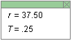

Instructions
This page is designed to get you started using the applet. The applet should be open. The step-by-step instructions on this page are to be done in the applet. You may need to toggle back and forth between instructions and applet if your screen space is limited.
 Setting the Parameters That Determine the
Particle's Orbit
Setting the Parameters That Determine the
Particle's Orbit
Setting the
Parameters That Determine the Particle's Orbit
The motion of a particle in a magnetic field depends on the
magnetic field  , the initial
velocity
, the initial
velocity  (0) of the particle, and
the charge q and mass m of the particle. It will now
be explained how you can vary these parameters and this way vary the
particle's motion.
(0) of the particle, and
the charge q and mass m of the particle. It will now
be explained how you can vary these parameters and this way vary the
particle's motion.
All parameter values are entered in SI-units. The units are not specified in the entry fields. For more comments on units, please see the section Data below.
 the applet. The
magenta velocity vector should be visible. You can hide or display
it by means of the Velocity toggle button
the applet. The
magenta velocity vector should be visible. You can hide or display
it by means of the Velocity toggle button  . For the time being, keep it displayed.
. For the time being, keep it displayed.Important for the nature of the motion is the direction of the initial velocity relative to the direction of the magnetic field. In the applet the initial velocity is fixed to be horizontal and to the right, i.e., in the positive x-direction, but the direction of the magnetic field can be varied to some extent. It is not necessary to vary the directions of both the velocity and the field to be able to observe the range of possible motions.
Note that the speed cannot be adjusted by dragging the tip of the velocity vector.
Set the direction of the magnetic field to out-of-screen with the
Magnetic Field Direction toggle button  .
.
You should obtain the display shown in Figure 1 below. The
small circles indicate that the magnetic field is pointing towards
the viewer. Think of the little circles as tips of arrows
pointing towards you. To display the orbit (shown in blue in
Figure 1), click Play  and the
Trace toggle button
and the
Trace toggle button  .
.

Figure 1

. Display the particle's track by selecting the Trace
toggle button . You should be
able to observe the particle moving along a circular path curving
to the right, like that shown in Figure 1. , and reverse
the charge to -2.0 C without changing any of the other settings.
Then click Play again. You should be able to observe a circular
orbit exactly like that in Figure 1, but this time curving to the
left.
once. Little "x's" throughout the applet window indicate the field
direction. You can think of the "x's" as tail ends of arrows
viewed from behind.
, and reverse
the charge to -2.0 C without changing any of the other settings.
Then click Play again. You should be able to observe a circular
orbit exactly like that in Figure 1, but this time curving to the
left.
once. Little "x's" throughout the applet window indicate the field
direction. You can think of the "x's" as tail ends of arrows
viewed from behind.
If you don't change any of the other settings, the motion should be just like the previous one, the same size circle as in Figure 1 but curving to the left.
 . The step size cannot be
varied.
. The step size cannot be
varied.
Set the applet to the settings made initially:
: magnitude 2.0 T, direction out
of screenIn the Data Box in the top right corner of the applet, observe the values of the radius r of the circular orbit and the period T with which the particle moves through the circle. The Data Box is shown in Figure 2 below.

Figure 2
The radius and period are displayed without units, as are the slider values. The value of the radius r is in SI-units. However, the value of the period is not. To obtain the value of the period in seconds, muliply the value given in the Data Box by 2π.
Click Reset, and make the following settings in the applet:
: magnitude 1.0 T, direction out
of screenPlay the motion. You should find that the particle's orbit goes way off screen. If you wait long enough, the particle will return to its starting point.
To be able to see the entire orbit (most of it, anyway), as in Figure 3 below, click Rewind and set the Zoom slider to 1/6X.
Figure 3
The Zoom may have to be set to a different value, depending on the size of your window.